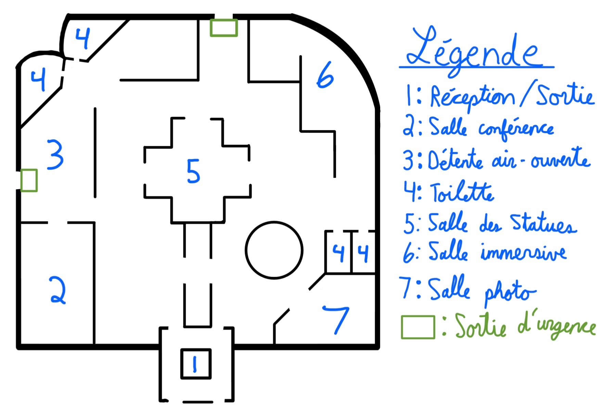

Voici où se situe notre musée. Il est situé à Montréal, au Québec, au Canada. Si vous êtes dans les parages, vous pouvez facilement venir nous visiter en transport en commun. Voici une carte Google Maps pour vous aider à trouver notre musée. Vous pouvez interragir avec pour mieux voir les alentours.
Voici une carte en vue aérienne de notre musée. Ainsi, vous pourrez repérer les salles qui vous intéressent le plus et y trouver son chemin sans problème !
